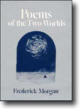
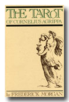

Select a title to read selected passages.
|   |
The One Abiding, 2003 The Night Sky, with photographs by Gaylen Morgan, 2002 limited edition Washington Square, 2000 limited edition Poems for Paula, 1995 Poems: New and Selected, 1987 Eleven Poems, 1983 limited edition Northbook, 1982 Refractions, a collection of translations, 1981 limited edition The River, a poem in nine parts, 1980 limited edition Death Mother and Other Poems, 1979 The Tarot of Cornelius Agrippa, 1978 limited edition Poems of the Two Worlds, 1977 Poems of the Two Worlds, six poems illustrated with drawings by Clyde Lynds, 1977 limited edition Umbrella Poem, 1973 limited edition A Book of Change, with four illustrations by Hozan Matsumoto, 1971
|